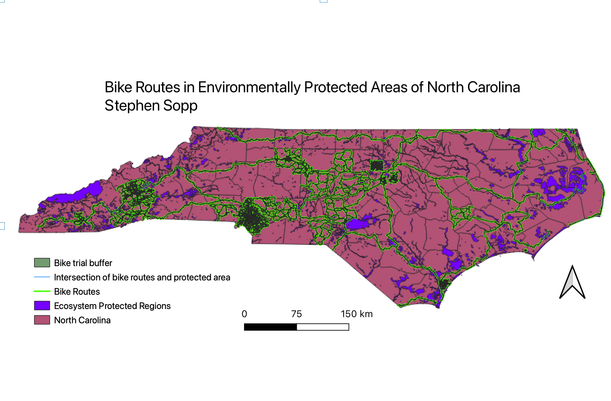

Homework 8
How do bike trails affect environmentally protected areas of North Carolina and can you bike through them?

In this map I used the buffer and intersect funcations to represent how biking trails and environmentally protected areas interact. I found it interesting that there was minimal overlap between the two regions and depicted in the intersect function of the map. I used the buffer tool in order to represent possible environmental impact from the bike trails, either through sound pollution, erosion, or litter. I found that eastern and western North Carolina had small regions where you could bike through environmentally protected areas but for the majority of the state the environmentally protected regions did not have much overlap. I did find it interesting that many bike trails were actually boardering the environmentally protected areas, potentially acting as a natural buffer from society.
geojson data
buffer shapefile
intersection geojson
Environmental Protection Areas
Bike Trail Data